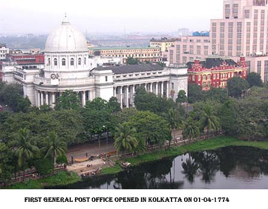
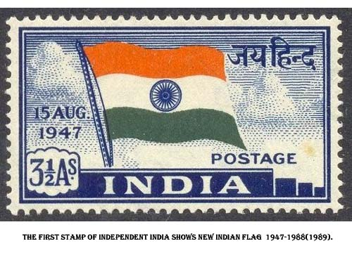

<html>
<head>
<title>Arun mini project</title>
</head>
<body bgcolor="#66FFFF">
<hr><p><marquee bgcolor="#000000"><font size="25" color="Red">Indian Postal</font></marquee></p>
<p><hr></p>
<th><font size="6" color="Blue"><i><b><u>Introduction</u>:</b></i></font></th>
<blockquote>
<table border="5" align="right" bordercolor="#CC6600">
<th colspan="2"><p><align="center"><font color="#CC6600"><u>Department of Indian Post</u></font></p><p></p></th>
<tr><th><div align="left"><b>Type</b></div></th><td><p>Agency of the Government of India</p></td></tr>
<tr><th><div align="left"><b>Industry</b></div></th><td><p>Postal system</p></td></tr>
<tr><th><div align="left"><b>Founded</b></div></th><td><p>01-04- 1774</p></td>
<tr><th><div align="left"><b>Headquarters</b></div></th><td><p>New Delhi, Delhi, India</p></td></tr>
<tr><th><div align="left"><b>Employees</b></div></th><td><p>4,66,903 (As of 31 March 2011)</p></td></tr>
<tr><th><div align="left"><b>Key people</b></div></th><td><p>Ms Manjula Prashar, Director General</p></td></tr>
<tr><th><div align="left"><b>Website</b></div></th><td><p><u>www.indiapost.gov.in</u></p></td></tr></table>
</blockquote>
<p></p>
<td><font size="4">The Department of Posts, trading as India Post, is a government-operated postal system in India; it is generally referred to within India as "THE POST OFFICE".</font><p></p>
<font size="4"><div align="justify">As of 31 March 2011, the Indian Postal Service has 154,866 post offices, of which 139,040 (89.78%) are in rural areas and 15,826 (10.22%) are inurban areas. It has 25,464 departmental POs and 129,402 EDBPOs. At the time of independence, there were 23,344 post offices, which were primarily in urban area.The postal service comes under the Department of Posts which is a part of the Ministry of Communications and Information Technology under the Government of India. India has been divided into 22 postal circles, each circle headed by a Chief Postmaster General.</div></font></td>
<p><marquee width="300" behavior="slide" direction="down"></marquee>
<marquee width="300" behavior="slide" direction="down"></marquee></p>
<hr><p><div align="center"><a href="Page1.html"><b>BACK</b></a> <a href="Page3.html"><b>NEXT</b></a></div></p>
</body>
</html>


